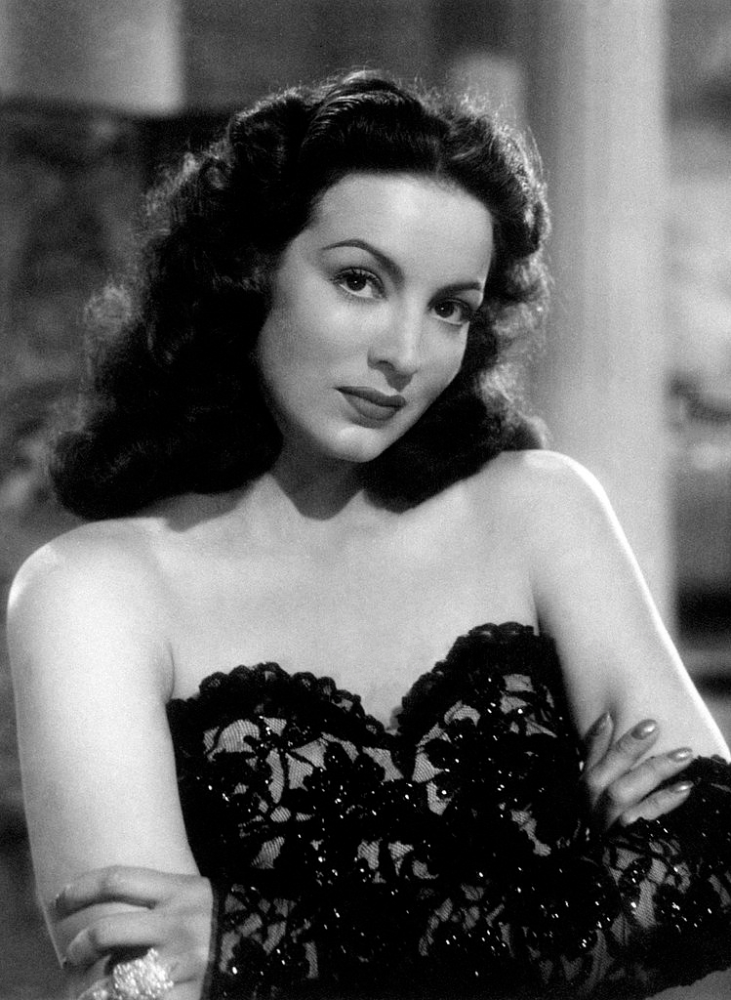
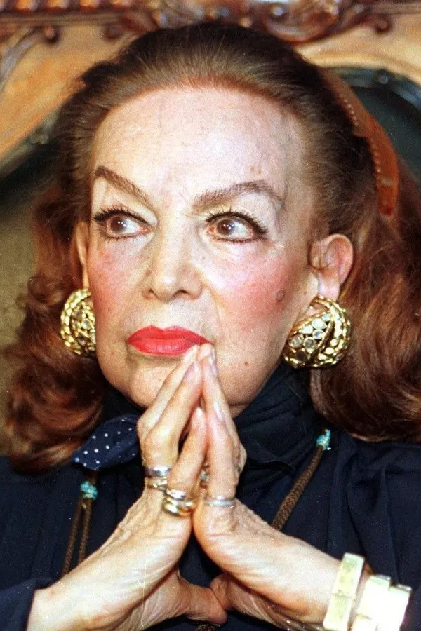

| Foto | Datos | Foto |
|---|---|---|
|  | María de los Ángeles Félix Güereña, conocida simplemente como María Félix, fue una actriz mexicana que se convirtió en una de las figuras más emblemáticas y fascinantes de la Época de Oro del cine mexicano. Nació en Álamos, Sonora, el 8 de abril de 1914, y su belleza, su fuerte carácter y su talento actoral la inmortalizaron como "La Doña" y "María Bonita".
Su carrera en el cine comenzó de forma fortuita. Tras ser descubierta por un director en las calles de la Ciudad de México, debutó en la película El peñón de las ánimas (1942). Sin embargo, fue su interpretación en la película Doña Bárbara (1943) la que le dio el apodo de "La Doña" y la consolidó como una estrella. María Félix no solo fue una actriz, sino también un icono de la moda y un símbolo de la mujer fuerte e independiente. A lo largo de su carrera, participó en 47 películas en México, Francia, Italia y Argentina, colaborando con directores de la talla de Jean Renoir y Luis Buñuel. Aunque le ofrecieron papeles en Hollywood, los rechazó porque no quería interpretar roles estereotipados de "india". Entre sus películas más destacadas se encuentran Enamorada (1946), Río Escondido (1948) y Tizoc (1957). Recibió múltiples reconocimientos, incluyendo el Ariel de Oro por su trayectoria. Su vida personal, marcada por cuatro matrimonios y un solo hijo, el actor Enrique Álvarez Félix, fue tan mediática como su carrera. Falleció el 8 de abril de 2002, el día de su 88 cumpleaños, dejando un legado artístico y un mito que sigue vivo en la cultura popular. Su famosa frase "Yo soy la que manda" resumía a la perfección su carácter y su postura de ser dueña de su propia vida y destino. |  |